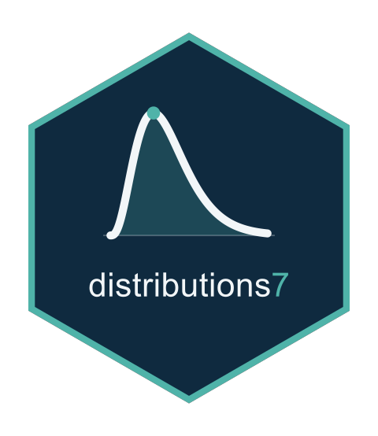

The Third and Fourth Derivatives of a Truncated Family's Expected Information
Source:R/d34e_truncated.R
trunc_d34expected.RdComputes the derivatives of order k (3 or 4) of the expected Hessian of a
truncated() family on the parameter scale, as expectations under the
truncated law taken by expectation().
Arguments
- d
A truncated family, from
truncated().- y
The response, read for its length.
- th
The parameters.
- k
The order,
3Lor4L.- t
Unused; it is the thread count of the registration.
Value
A list of components keyed as d3expected_names() or
d4expected_names(), each of length length(y).
Details
With \(\ell = \ell_P - \log Z\) the truncated log-likelihood and
\(E_{ab} = -E[\ell_a\ell_b]\), the component for a multiset \(S\) is
minus the expectation of the polynomial of d34e_plan(), which reads the
derivatives of \(\ell\) to order \(k + 1\). The truncation points do
not depend on the parameters, so there is no boundary term. Those of
\(\ell\) are the parent's less those of \(\log Z\), computed once per
parameter combination by trunc_logz_derivs() and passed to the integrand.
The derivatives of \(\log Z\) to order four are read from the parent's
distribution function where has_exact_cdf_deriv() holds, and the
parent's distribution function has no derivatives of order five, so each
ratio \(d^B Z/Z\) of that order is the expectation, under the truncated
law, of the complete Bell polynomial of the parent's log-density
derivatives (a quadrature or a sum), which is accurate but not a closed
form. Order five enters the fourth derivative only. The form
\(E[\ell_{ab}]\) would need the sixth derivative of the parent.